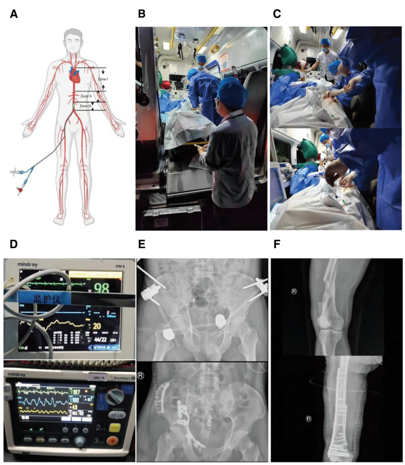
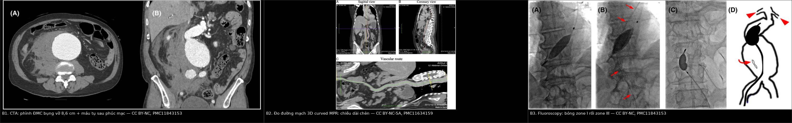
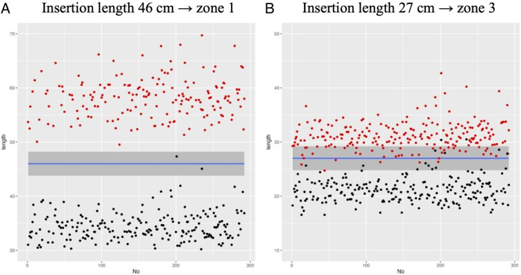
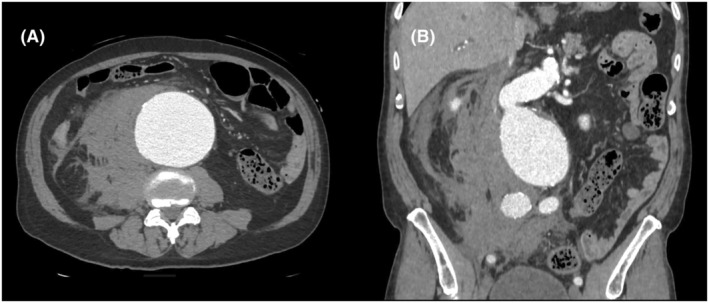
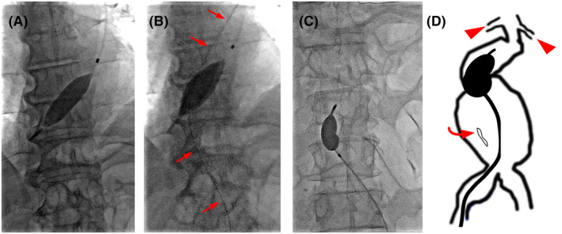
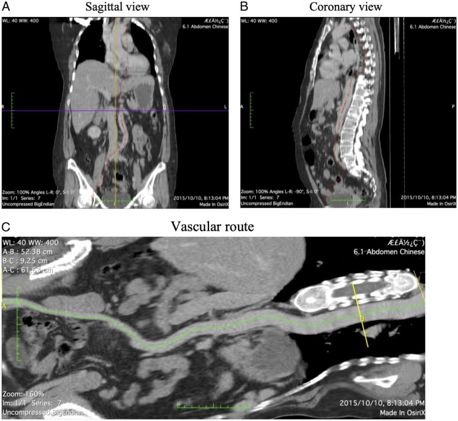

1816 — REBOA: bóng chèn nội mạch động mạch chủ trong chấn thương & vỡ khung chậu / Resuscitative Endovascular Balloon Occlusion of the Aorta
Tags: pattern:chay-mau-khong-cam pattern:soc-mat-mau pattern:gia-phinh-dong-mach vung:dong-mach-chu vung:khung-chau vung:o-bung protocol:CTA-toan-than protocol:DSA protocol:REBOA protocol:sieu-am-mach-dui score:zone-REBOA
Mức chắc chắn (certainty): tổng hợp y văn (literature synthesis) — ghép 2 ca nguyên văn (chấn thương khung chậu mở, REBOA zone III trong xe cứu thương: Medicine 2026, PMC12928857, CC BY; phình ĐMC bụng vỡ, zone I qua đường cánh tay rồi chuyển zone III: Acute Med Surg 2025, PMC11843153, CC BY-NC), 1 nghiên cứu đo đạc trên CT (223 bệnh nhân, Int J Surg 2024, PMC11634159, CC BY-NC-SA) và 1 tổng quan toàn diện (Chin J Traumatol 2026, PMC12891851, CC BY-NC-ND). Số nào nguồn không đưa thì ghi "chưa rõ".
Câu chốt: REBOA không phải "bơm bóng là cứu" — nó là cầu nối 30–60 phút mua thời gian tới cầm máu dứt điểm. Ba con số quyết định: zone I < 30 phút, zone III < 60 phút (chèn hoàn toàn), đầu catheter cách điểm vào 44–48 cm cho zone I, và zone II là vùng cấm (động mạch tạng). Bơm bóng sai zone hoặc quá thời gian = cứu được chảy máu nhưng mất tạng, mất chi, hoặc tử vong vì toan–tăng kali sau xả bóng.
1. Tổng quan bệnh học – cơ chế hình ảnh
1.1 Sinh lý: bóng chèn làm gì và phá gì
- Mục tiêu: chấn thương mất máu không cầm được (non-compressible torso hemorrhage, NCTH) là nguyên nhân tử vong phòng được hàng đầu; REBOA chặn dòng chảy xuôi → tăng hậu tải và áp lực tưới máu não–vành, giữ máu cho tim/não trong khi chờ mổ/nút mạch.
- Hiệu quả huyết động có số: loạt 6 ca đầu tiên tăng huyết áp tâm thu 55 ± 20 mmHg, thời gian chèn 18 ± 34 phút (PMC12891851). Ca nguyên văn: 44/22 mmHg → 102/82 mmHg sau bơm từng bước (PMC12928857).
- Cái giá: toàn bộ tạng dưới bóng thiếu máu. Thiếu máu – tái tưới máu (ischemia–reperfusion) gây toan lactic, tăng kali, hạ canxi, suy thận cấp, hội chứng khoang, thiếu máu tủy sống; tỉ lệ biến chứng chuyển hóa 5–20% trên lâm sàng (tới 80% ở mô hình động vật) (PMC12891851).
- Vì sao "một phần" tốt hơn "hoàn toàn": pREBOA giữ dòng tâm thu ngoại vi (đích SBP thấp hơn 20–50 mmHg so với trên bóng, hoặc MAP ngoại vi > 30 mmHg) → giảm thiếu máu trong khi vẫn giữ huyết áp trung tâm. So sánh registry: pREBOA-PRO dùng 87% zone I (so với 33% ở ER-REBOA), thời gian chèn 59 vs 50 phút, AKI 19% vs 33% (PMC12891851).
1.2 Giải phẫu ba zone — nền tảng của mọi quyết định
| Zone | Giới hạn giải phẫu | Chiều dài trung vị (223 ca) | Chỉ định | Trần thời gian (chèn hoàn toàn) |
|---|---|---|---|---|
| I | ĐMC xuống, từ nguyên ủy ĐM dưới đòn trái đến thân tạng | 24,06 cm (22,64–25,42) | Chảy máu ổ bụng (gan, lách, thận, mạch mạc treo), vỡ phình ĐMC bụng | < 30 phút |
| II | ĐMC cạnh tạng, từ thân tạng đến ĐM thận thấp nhất | 2,94 cm (2,46–3,63) | Không dùng — bóng che ĐM tạng → thiếu máu gan–ruột–thận | — |
| III | ĐMC dưới thận, từ ĐM thận thấp nhất đến ngã ba chủ | 9,95 cm (9,29–10,76) | Chảy máu khung chậu, chấn thương bẹn–đùi, vỡ phình ĐMC bụng | < 60 phút |
- Zone III ngắn (chỉ ~10 cm) là lý do đặt sai zone III dễ hơn nhiều: độ chính xác của chiều dài chèn cố định chỉ 82,1% ở zone III so với 99,43% ở zone I (PMC11634159).
- Zone II nguy hiểm kép: vừa che các động mạch tạng, vừa quá ngắn để bóng 4 cm nằm gọn — bóng thường vắt qua thân tạng hoặc ĐM thận.
1.3 Ngưỡng định lượng nằm lòng
| Đại lượng | Con số | Nguồn |
|---|---|---|
| Chọn bệnh nhân (huyết áp) | SBP < 80–90 mmHg dù đã hồi sức | PMC12891851 |
| Chiều dài chèn tối ưu zone I | 47,5 cm (chính xác 99,43%); khuyến cáo 44–48 cm đối chiếu mốc giữa xương ức (chính xác 100%) | PMC11634159 |
| Chiều dài chèn tối ưu zone III | 25,5 cm (chính xác 82,1%); mốc rốn + tỉ lệ Xu/Up (chính xác 94,6%) | PMC11634159 |
| Đường kính sheath | 7 Fr (dùng tăng từ 2,9% → 54,8%, AORTA 2014–2018); 4 Fr (COBRA-OS) ít chấn thương mạch hơn | PMC12891851 |
| Đích pREBOA | SBP ngoại vi thấp hơn 20–50 mmHg so với trên bóng; MAP ngoại vi > 30 mmHg | PMC12891851 |
| Trần chèn pREBOA (theo thiết bị) | Zone I ~2 giờ, zone III ~4 giờ | PMC12891851 |
| Xả bóng | Giảm 10–20% thể tích mỗi 5–10 phút, theo dõi điện giải | PMC12891851 |
| Tử vong theo zone (TQIP 2015–2016) | Zone I 71,4% vs zone III 48,8% (p = 0,002) | PMC12891851 |
| Biến chứng chi (đoàn hệ so khớp) | Hội chứng khoang 5,4% vs 1,1% (OR ≈ 5,39); mở cân 5,8% vs 1,2%; AKI 12,9% vs 7,4% | PMC12891851 |
| Huyết khối | VTE 14,7% vs 10,0%; PE 5,3% vs 2,7% | PMC12891851 |
| Thiếu máu tủy sống | 1–5% (zone I > 30 phút); < 1–2% trong loạt 684 bệnh nhân | PMC12891851 |
| Biến chứng ở chiến trường | 7/43 (16,3%) người sống: 4 huyết khối/thuyên tắc (2 phải cắt cụt dưới gối) | PMC12891851 |

(A) Ba zone trên sơ đồ: zone I ĐMC ngực, zone II cạnh tạng, zone III dưới thận. (B, C) Đội hồi sức đặt REBOA trong xe cứu thương dưới hướng dẫn siêu âm cầm tay. (D) So sánh sinh hiệu trước/sau: 44/22 → 102/82 mmHg. (E, F) Phim sau cố định ngoài khung chậu và đinh nội tủy xương đùi. Nguồn: Medicine 2026 (PMC12928857), Fig. 2, CC BY 4.0.2. Mẫu hình + chẩn đoán phân biệt theo vị trí (gamut)
2.1 Chọn zone theo nguồn chảy máu (không chọn theo "thói quen")
- Chảy máu trong ổ bụng / tạng đặc / mạch mạc treo → zone I. Nhưng: chấn thương gan độ cao, TBI nặng, chấn thương mạch xuyên thấu là nhóm không được lợi (thậm chí tử vong cao hơn) → hạn chế zone I, cân nhắc pREBOA (PMC12891851).
- Vỡ khung chậu, chấn thương bẹn–đùi, vỡ phình ĐMC bụng → zone III (tránh thiếu máu tạng). Registry AORTA: dùng zone III tăng 14,7% → 40,6% (PMC12891851).
- Vỡ phình ĐMC bụng (rAAA): có thể bắt đầu zone I đường cánh tay (tiếp cận nhanh khi bụng chướng, không đặt được bẹn) rồi chuyển zone III khi đã có đường vào bẹn và kiểm soát được — đúng ca nguyên văn thứ 2 (PMC11843153).
- Ngừng tim do chấn thương / chảy máu dưới cơ hoành: zone I, nhưng bằng chứng còn yếu; so sánh với mở ngực cấp cứu (resuscitative thoracotomy) vẫn chưa ngã ngũ (PMC12891851).
2.2 Gamut "sốc mất máu không cầm được" — ai cần bóng, ai cần bàn mổ
- Vỡ khung chậu: đai khung chậu + cố định ngoài ± nút mạch là nền tảng; REBOA zone III khi tụt áp liên tục và chưa tới được phòng can thiệp. So sánh với nhồi gạc tiền phúc mạc (PPP): một số dữ liệu cho PPP tốt hơn (52% vs 37%, p = 0,048) → REBOA không thay thế PPP (PMC12891851).
- Vỡ tạng đặc (gan/lách/thận): CTA → nút mạch là điều trị; REBOA zone I chỉ để cầm cự trên đường tới angio-suite.
- Vỡ phình ĐMC bụng: REBOA zone I/III + stent-graft hoặc mổ; bóng giúp chặn dòng trong lúc mở bụng.
- Chảy máu tiêu hóa ồ ạt: REBOA zone I như cầu nối trước nội soi/nút mạch — chỉ định hiếm, chọn lọc.
- Chảy máu sản khoa: zone III ± zone I tùy nguồn; bằng chứng từ registry, không có RCT.
- Chống chỉ định / không nên: TBI nặng (zone I làm tăng áp lực nội sọ), bệnh mạch chậu nặng–gập góc, nhiễm trùng vùng bẹn, không có khả năng cầm máu dứt điểm trong thời gian cho phép — bóng chỉ kéo dài thời gian chết.
3. Bảng so sánh phân biệt (ma trận đối chiếu)
| Thực thể (entity) | Hình ảnh / kỹ thuật điển hình | Chốt vào (rule-in) | Chốt loại (rule-out) | Gợi ý xác nhận |
|---|---|---|---|---|
| REBOA zone I | Bóng dưới ĐM dưới đòn trái, trên thân tạng; trên phim/fluoroscopy bóng ở ngang D7–D11 | Thoát mạch ổ bụng trên CTA + tụt áp không đáp ứng hồi sức | Bóng ngang L1 (đã vào zone II) → xả và rút lên | Fluoroscopy hoặc phim giường; chiều dài chèn 44–48 cm |
| REBOA zone III | Bóng dưới ĐM thận, trên ngã ba chủ; ngang L3–L4 | Vỡ khung chậu/thoát mạch vùng chậu–bẹn + sốc | Bóng quá cao (che ĐM thận) hoặc quá thấp (trong ĐM chậu) | Mốc rốn + Xu/Up; chiều dài ~25,5 cm |
| Mở ngực cấp cứu (RT) | Mở ngực, kẹp ĐMC xuống | Ngừng tim, vết thương ngực, tràn máu màng tim | Bệnh nhân còn huyết áp, chấn thương bụng–chậu đơn thuần | Chỉ định theo cơ chế; RT có nguy cơ nhiễm trùng, cần mổ |
| Nhồi gạc tiền phúc mạc (PPP) | Bụng dưới, nhồi gạc quanh bàng quang | Vỡ khung chậu mở, bụng chướng, chưa có angio | Chảy máu ổ bụng trên mạc treo → cần mổ/angio | Mở bụng dưới; so sánh tử vong với REBOA còn tranh luận |
| Nút mạch (TAE) | DSA: thoát mạch, giả phình; coil/keo/gelfoam | Thoát mạch hoạt tính hoặc giả phình trên CTA | Không có ổ thoát mạch → không nút mù | Angio-suite; thành công > 85% khi làm sớm (PMC13282293) |
| Bóng trong lòng mạch chủ do gãy stent-graft | Bóng/đoạn stent di lệch trong lòng ĐMC | Tiền sử EVAR + tụt áp | Không có stent, ĐMC bình thường | CTA; xử trí khác hoàn toàn |

Trái → phải: B1 CTA phình ĐMC bụng vỡ + máu tụ sau phúc mạc (CC BY-NC, PMC11843153); B2 đo đường mạch bằng 3D curved MPR để tính chiều dài chèn (CC BY-NC-SA, PMC11634159); B3 fluoroscopy xác nhận bóng zone I rồi zone III (CC BY-NC, PMC11843153). Ảnh ghép letterbox, không crop/kéo giãn.3.1 Bảng phụ: hai kiểu "bóng" dễ nhầm trên hình ảnh
| Hình ảnh | Chốt vào | Chốt loại |
|---|---|---|
| REBOA đúng vị trí | Bóng căng, hình thoi, nằm trong lòng ĐMC, có đầu dẫn catheter đi xuống từ bẹn/cánh tay | Bóng nằm ngoài lòng mạch, xẹp một phần → bóng vỡ/di lệch |
| Bóng ngoài ý muốn (bóng Foley, bóng chèn thực quản) | Hình dạng tròn, có catheter đặc trưng, không theo trục ĐMC | Theo trục ĐMC + có sheath mạch đùi → REBOA |
4. Protocol chụp + hệ phân độ/điểm chuẩn hóa
4.1 Trước thủ thuật: CTA là bắt buộc khi bệnh nhân còn "cửa sổ"
- CTA toàn thân (whole-body) thì động mạch + tĩnh mạch cửa ở bệnh nhân ổn định hoặc tụt áp nhưng đáp ứng hồi sức: tìm thoát mạch hoạt tính, giả phình, tụ máu, và đo ĐMC (đường kính, vôi hóa, gập góc) để chọn cỡ bóng (PMC13282293).
- Đo chiều dài đường mạch trên CT bằng 3D curved MPR từ ĐM đùi chung ngang giữa chỏm xương đùi tới các mốc (ngã ba chủ, ĐM thận, thân tạng, ĐM dưới đòn trái) — phương pháp của nghiên cứu 223 ca; độ gập góc chậu tăng theo tuổi (trung vị 1,21 ở người > 60 tuổi so với 1,095 chung) (PMC11634159).
- Siêu âm mạch đùi để chọc: giảm chọc mù, giảm biến chứng đường vào (PMC12891851).
4.2 Đặt bóng — các bước có số
- Chọc ĐM đùi chung dưới siêu âm, đặt sheath 7 Fr (hoặc 4 Fr nếu có COBRA-OS).
- Đưa bóng tới zone đích: zone I 44–48 cm (đối chiếu giữa xương ức); zone III ~25,5 cm (đối chiếu rốn + tỉ lệ Xu/Up).

Mô phỏng 223 bệnh nhân: chèn cố định 46 cm cho zone I (trái) và 27 cm cho zone III (phải); đỏ = mép đầu bóng, đen = mép cuối, dải xám = khoảng zone. Zone III có nhiều điểm rơi ra ngoài dải hơn — giải thích vì sao độ chính xác chỉ 82,1%. Nguồn: Int J Surg 2024 (PMC11634159), Fig. 5, CC BY-NC-SA 4.0.- Xác nhận vị trí bằng fluoroscopy/phim giường — không bơm mù; đầu bóng zone I ngang D7–D11, zone III ngang L3–L4.
- Bơm từng bước tới khi SBP đạt đích; nếu dùng pREBOA, giữ SBP ngoại vi thấp hơn 20–50 mmHg so với trên bóng và MAP ngoại vi > 30 mmHg.
- Đồng hồ chạy: ghi giờ bơm; zone I < 30 phút, zone III < 60 phút (chèn hoàn toàn); pREBOA có thể tới ~2 giờ (zone I) / ~4 giờ (zone III) theo thiết bị.
- Xả bóng từng bước: giảm 10–20% mỗi 5–10 phút, theo dõi kali, canxi, lactat, huyết áp; chuẩn bị canxi gluconat 10% và insulin–glucose khi tăng kali.
- Cầm máu dứt điểm: mổ / nút mạch / stent-graft — bóng không phải điều trị.
flowchart TD
A[Chấn thương, sốc mất máu, SBP dưới 90 mmHg] --> B[Đai khung chậu, hồi sức máu, FAST]
B --> C{Còn cửa sổ để chụp CTA?}
C -->|Có| D[CTA toàn thân: tìm thoát mạch, giả phình, đo ĐMC]
C -->|Không, sắp ngừng tim| E[Quyết định theo cơ chế và vị trí chảy máu]
D --> E
E --> F{Nguồn chảy máu ở đâu?}
F -->|Ổ bụng, tạng đặc, mạc treo| G[Zone I: 44-48 cm, dưới 30 phút]
F -->|Khung chậu, bẹn, vỡ phình ĐMC bụng| H[Zone III: khoảng 25,5 cm, dưới 60 phút]
F -->|Ngực, ngừng tim, tràn máu màng tim| I[Cân nhắc mở ngực cấp cứu]
G --> J[Xác nhận vị trí bằng fluoroscopy, bơm từng bước]
H --> J
J --> K[Đồng hồ chèn + theo dõi chi và nước tiểu]
K --> L[Cầm máu dứt điểm: mổ, nút mạch, stent-graft]
L --> M[Xả bóng 10-20 phần trăm mỗi 5-10 phút, theo dõi kali và canxi]
4.3 Hình ảnh sau thủ thuật (phần bác sĩ CĐHA phải chủ động)
- CTA chậu–đùi khi nghi biến chứng đường vào: bóc tách, giả phình, huyết khối ĐM đùi — nhất là với sheath ≥ 12 Fr hoặc chọc nhiều lần.
- CT bụng khi nghi thiếu máu ruột/tạng sau chèn zone I kéo dài: ruột thành mỏng, khí trong thành, mất ngấm thuốc.
- Hội chứng khoang là chẩn đoán lâm sàng (đau, căng, liệt) — đừng chờ hình ảnh; đo áp lực khoang khi nghi ngờ.
5. Biến thể bình thường và cạm bẫy
- "Bơm bóng cho chắc" ở bệnh nhân còn huyết áp ổn định: đây là lạm dụng; các đoàn hệ so khớp cho thấy REBOA không cải thiện sống và tăng biến chứng ở nhóm chọn sai (VTE, AKI, cắt cụt) (PMC12891851).
- Đặt zone II: bóng che thân tạng/ĐM thận → thiếu máu gan–ruột–thận mà không cầm được máu khung chậu. Zone II dài trung bình 2,94 cm nên rất dễ "trượt" vào. Luôn kiểm tra vị trí bằng fluoroscopy.
- Zone III đặt sai cao: bóng che ĐM thận → vô niệu, AKI; sai thấp → bóng trong ĐM chậu → không chèn được ĐMC và có thể gây bóc tách.
- Quên đồng hồ: zone I > 30 phút hoặc zone III > 60 phút là ngưỡng thiếu máu nặng (PMC12891851). Trong ca vận chuyển, tổng thời gian 80 phút vẫn an toàn vì dùng pREBOA + chu kỳ 30 phút chèn / 10 phút xả (PMC12928857) — không phải vì "80 phút là an toàn".
- Xả bóng đột ngột: gây hạ áp, toan, tăng kali, loạn nhịp. Xả 10–20% mỗi 5–10 phút và theo dõi điện giải.
- TBI: zone I làm tăng áp lực nội sọ; nếu buộc phải dùng, theo dõi ICP và ưu tiên pREBOA (PMC12891851).
- Bóng trong lúc vận chuyển có thể di lệch: rung lắc, thay đổi tư thế; phải kiểm tra lại vị trí sau di chuyển và theo dõi mạch ngoại vi liên tục.
- Nhầm "không có thoát mạch trên CTA" = không cần bóng: CTA có thể bỏ sót tổn thương mạch nhỏ hoặc bị nhiễu kim loại; quyết định theo huyết động, không chỉ theo ảnh.
6. Tự lượng giá — Blind Quiz
Ca 1 — Nam 69 tuổi, đau lưng đột ngột, tụt áp. Nhìn CT, mô tả trước.

- Gợi ý lâm sàng: nam 69 tuổi, tăng huyết áp không điều trị, đau lưng dữ dội, huyết áp thấp; bụng chướng.
- Câu hỏi: (1) Tổn thương chính là gì và kích thước? (2) Dấu hiệu nào chứng tỏ đã vỡ? (3) Vì sao REBOA được đặt zone I qua đường cánh tay trước, rồi chuyển zone III?
Bấm để hiện đáp án (findings + chẩn đoán)
- Dấu hiệu: phình ĐMC bụng đường kính trước–sau ~8,6 cm, thành có vôi hóa, máu tụ sau phúc mạc lan rộng bên trái, mất mặt phẳng mỡ quanh ĐMC.
- Chẩn đoán: phình ĐMC bụng vỡ (rAAA).
- Vì sao zone I đường cánh tay: bệnh nhân béo, bụng chướng, tiếp cận bẹn khó khăn; đường cánh tay cho chèn nhanh phía trên ổ vỡ. Khi đã có đường vào bẹn và chuẩn bị mổ, chuyển sang zone III để giảm thiếu máu tạng, kèm pREBOA + truyền máu đầy đủ.
- Nguồn ảnh: Acute Med Surg 2025 (PMC11843153), Fig. 1, CC BY-NC 4.0.
Ca 2 — Bóng đã bơm. Nhìn fluoroscopy, bóng nằm ở zone nào?

- Gợi ý lâm sàng: cùng bệnh nhân rAAA; (A) bóng qua đường cánh tay trái; (C) bóng qua đường đùi phải.
- Câu hỏi: (1) Hai bóng nằm ở zone nào? (2) Làm sao xác nhận bằng mốc xương? (3) Vì sao không được để bóng ở giữa?
Bấm để hiện đáp án (findings + chẩn đoán)
- Dấu hiệu: (A) bóng hình thoi ở ĐMC ngực dưới, trên thân tạng → zone I; (B) dây dẫn đi từ ĐM đùi phải lên; (C) bóng dưới ĐM thận → zone III; (D) sơ đồ minh họa hai vị trí.
- Mốc xương: zone I ngang D7–D11; zone III ngang L3–L4; chiều dài chèn 44–48 cm (zone I) và ~25,5 cm (zone III).
- Vì sao không ở giữa: vùng giữa là zone II — che thân tạng và ĐM thận, gây thiếu máu gan–ruột–thận mà vẫn không cầm máu khung chậu.
- Nguồn ảnh: Acute Med Surg 2025 (PMC11843153), Fig. 2, CC BY-NC 4.0.
Ca 3 — Bạn cần đặt bóng zone I mà không có fluoroscopy. Làm thế nào?

- Gợi ý lâm sàng: bệnh nhân chấn thương, chuyển thẳng phòng mổ, không có C-arm; cần đặt bóng "mù" bằng mốc giải phẫu.
- Câu hỏi: (1) Ảnh này dùng để đo gì? (2) Chiều dài chèn nào cho zone I và độ chính xác? (3) Vì sao zone III khó hơn?
Bấm để hiện đáp án (findings + chẩn đoán)
- Dùng để đo: đường tâm mạch (centerline) từ ĐM đùi chung ngang giữa chỏm xương đùi tới ngã ba chủ, ĐM thận, thân tạng, ĐM dưới đòn trái — tức chiều dài chèn thực tế cho từng zone.
- Con số: zone I 47,5 cm (chính xác 99,43%), khuyến cáo 44–48 cm đối chiếu giữa xương ức (100%); zone III 25,5 cm (82,1%), mốc rốn + Xu/Up (94,6%).
- Vì sao zone III khó: đoạn zone III chỉ 9,95 cm (so với 24,06 cm ở zone I) → chỉ cần lệch vài cm là ra ngoài; thêm gập góc mạch chậu tăng theo tuổi.
- Nguồn ảnh: Int J Surg 2024 (PMC11634159), Fig. 3, CC BY-NC-SA 4.0.
Bài liên quan chéo
- 1807 – Bóc tách ĐMC bụng do chấn thương & sau thủ thuật
- 170 – Phình ĐMC bụng: chỉ định can thiệp & theo dõi
- 171 – Bóc tách ĐMC bụng & khối máu tụ trong thành
- 645 – Vỡ khung chậu ở trẻ: chảy máu, nút mạch và cố định
- 920 – Nút mạch trong chảy máu tiêu hóa
- 930 – Ung thư gan: TACE, RFA và nguyên lý can thiệp
Ảnh
images/1816_reboa_Hinh-PT_PMC12928857-f2.jpg— sơ đồ zone + triển khai trong xe cứu thương + phim sau cố định, Fig. 2, CC BY 4.0.images/1816_reboa_CT_PMC11843153-f1.jpg— CT phình ĐMC bụng vỡ + máu tụ sau phúc mạc, Fig. 1, CC BY-NC 4.0.images/1816_reboa_Fluoroscopy_PMC11843153-f2.jpg— fluoroscopy bóng zone I / zone III, Fig. 2, CC BY-NC 4.0.images/1816_reboa_CT-3DMPR_PMC11634159-f3.jpg— 3D curved MPR đo đường mạch, Fig. 3, CC BY-NC-SA 4.0.images/1816_reboa_Bieu-do_PMC11634159-f5.jpg— biểu đồ vị trí đầu/cuối bóng theo chiều dài chèn cố định 46 cm (zone I) và 27 cm (zone III), Fig. 5, CC BY-NC-SA 4.0.images/composite_buoc-hinh-anh.jpg— ảnh ghép 3 bước CT → đo 3D → fluoroscopy, CC BY-NC-SA 4.0.- Nguồn + giấy phép từng ảnh:
images/CREDITS.md.
Không dùng để chẩn đoán độc lập khi chưa có người hướng dẫn.